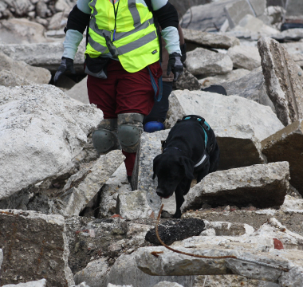
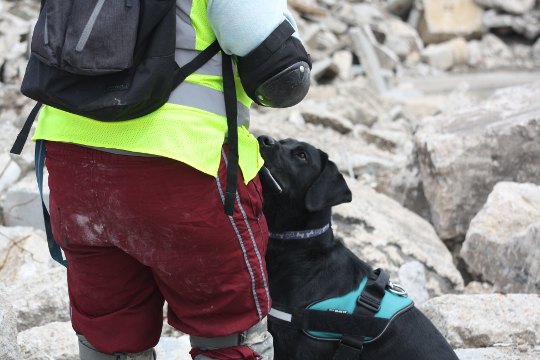
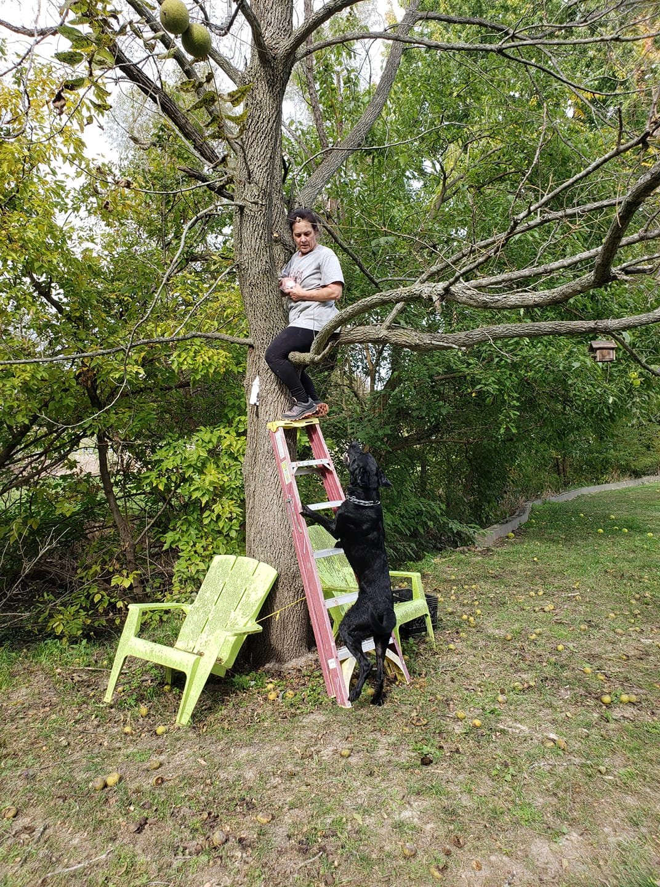

Some superheroes have four paws
I got started with scent work when I ran across barn hunt. I thought that since Pepper's job entails her constantly reading my body language to assess how I'm feeling, it could be a good bonding experience to swap roles into something where I have to read her body language instead. So I tried out barn hunt and we immediately fell in love with it. When you have a group of people that you regularly train with and see at events, it's like having an extended "dog family".
Both Pepper and Ganon compete in barn hunt and nose work. Ganon is also training for Search and Rescue and searches for ecological research. We've also tried agility with both dogs, but they (and their humans) didn't enjoy it as much as scent work.
Scent work requires a strong bond with the dog and a high level of training to recognize the dog's alert. Depending on the work being done, the handler may work with the dog's natural alert or train a specific alert when the dog finds the scent. Dogs may even have different alerts for different types of scent! Both Pepper and Ganon have a strong natural alert in nose work, and Ganon does in barn hunt as well. I'm in the process of supplementing Pepper's alert in barn hunt to be stronger because it's very subtle. For search and rescue (SAR) however, you want a very strong alert that anyone can recognize, even if you don't watch the dog search on nearly a daily basis, so Ganon is trained to give a specific alert for HRD and for live find.
Scent work can also overlap with service work. Certain types of service work, like for diabetic alert, allergen alert, and seizure alert are done by scent.
Barn Hunt was the first dog sport I ever tried. It is a sport based around dogs hunting rats. Some breeds are specifically bred for such jobs, but any breed can participate. The dogs must find a number of rats (based on the level they're participating in), and execute a climb (all four feet up on the hay bales) and a tunnel (difficulty based on the level of the course). Empty tubes, tubes with used rat litter, and tubes with rats are all hidden to give the dog the challenge of finding the actual rat. The safety of the rats is just as much a concern as the safety of the dogs during a barn hunt. The rats are trained to be used to being in the tubes and around dogs; I've even seen a number of rats who sleep through the whole thing! Barn hunt titles are recognized by the American Kennel Club (AKC), United Kennel Club (UKC), and Canadian Kennel Club (CKC).
The video below shows Ganon's first successful open level run, and in my opinion, his most entertaining run yet. There's something exhilarating about watching him go crazy, then suddenly focus and his whole body language changes when he hits the scent of a rat.
Pepper Potts: RATO, 150 points in Crazy 8s (needs 350 more for title)
Ganon: RATO, 100 points in Crazy 8s (needs 400 more for title)
Nosework is a dog sport based on the type of work detection dogs do, but with different scents. The scents the dogs learn are birch, anise, and clove. Dogs will learn to find each individual scent, as well as combinations of the scents. Because spots in the competitions can be so limited, each dog must pass an odor recognition test (ORT) to show that they can find three base scents before competing. Any dog interested in scent can train and compete. Nose work trials consist of four different elements: container search, indoor search, outdoor search, and vehicle search. Dogs must successfully complete all four searches for their title in that level, but the precise rules depend on the group doing the trial. The National Association of Canine Scent Work (NACSW) and the United Kennel Club (UKC) have slightly different rules for how the dogs earn their titles.
The video below shows all three rounds of Pepper's ORT. She nailed every single one in well under the allowed time, and I couldn't be more proud of her. I'm excited to see how she does in regular competitions.
Pepper Potts: NW1
Ganon: ORT passed, all 3 NASCW scents
Search and rescue is a bit different from barn hunt and nosework in that it is the first practical scent work Ganon has learned. I was looking for a practical skill for Ganon that would make use of his crazy energy level instead of trying to keep it under control like service work does. The book What the Dog Knows by Cat Warren got me fascinated by human remains detection (HRD). Reading about how these dogs can find human remains whether they're buried, underwater, up in a tree, fresh, old, it doesn't matter, it amazes me what the dogs can do! It's not easy to find people to train HRD because many people don't want to do it (the dog needs to be trained with the materials they'll be searching for - human bone, blood, and tissue), but my "dog family" helped find someone near me to train myself and both dogs. The most well-known certifying bodies for human remains detection are the American Mantrailing, Police & Work Dog Association (AMPWDA) and the National Association for Search and Rescue (NASAR). Ganon and I are nearly ready to certify as an HRD team, we just have his buried hides and down-in-motion that need work.
The photos below show both Ganon during a recent training session. We worked on a rubble pile, which was extremely challenging but he did amazing!
 Now that Ganon is nearing readiness for HRD certification, I have also added live find training. This is exactly what it sounds like - he finds live people. This could be a case where the person is hiding or missing. He isn't taking to it quite as naturally as other work he's done, but he seems to enjoy it and is learning well. The picture below shows him finding another trainer hiding up in a tree. Once we're certified for live find as well, we'll move onto disaster search, where the dog looks through usually collapsed buildings for both live and deceased people. If you've seen dogs working after a major storm, an earthquake, or when the World Trade Center towers were attacked, that is disaster search.
Pepper Potts: tried HRD, didn't like it
Ganon: in training for HRD and live find